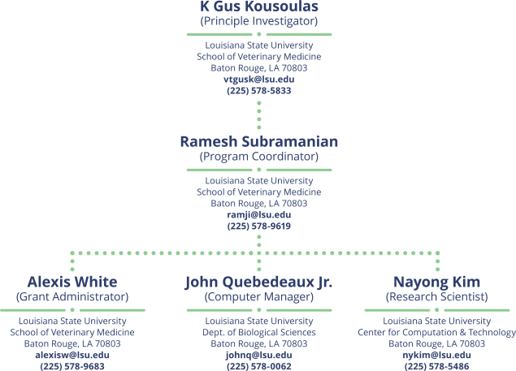

Mission Statement
Louisiana Biomedical Research Network (LBRN) was established in September 2001 with Biomedical Research Infrastructure Networks (BRIN) funding by the National Institutes of Health (NIH), through the National Center for Research Resources (NCRR) Grant P20RR016456, the LBRN is committed to raising the research competitiveness of Louisiana researchers. IDeA Networks of Biomedical Research Excellence (INBRE) is the second phase of the BRIN Program when LBRN initially started. Currently, LBRN is in the third phase with continued funding by the National Institute of General Medical Sciences (NIGMS) Grant 8P20GM103424 and the Louisiana Board of Regents Support Fund.
Goals
- Maintain and expand the previously established state-wide infrastructure and intellectual research network supporting interdisciplinary biomedical research.
- Expand and improve the critical mass of biomedical investigators at primary PUI campuses through the support of mentored research, and enhanced communication.
- Increase student interest in biomedical research careers throughout Louisiana by providing summer research opportunities to all institutions within the State.
- Evaluate, assess and continuously monitor the progress within LBRN through detailed tracking of research accomplishments, the development of human resources, and productive collaborations among participating institutions.
Flagship Campus
PUI Campuses
- Grambling State University
- Louisiana State University-Shreveport (LSU-S)
- Louisiana Tech University (LA Tech)
- Southeastern Louisiana University
- Southern University and A&M College (SUBR)
- University of Louisiana at Monroe (ULM)
- Xavier University of Louisiana (XULA)
Mentor Campuses
Summer Research Campuses
- Baton Rouge Community College
- Centenary College
- Dillard University
- Louisiana College
- Louisiana State University-Alexandria
- McNeese State University
- Nicholls State University
- Northwestern State University
- Our Lady of the Lake College
- Southern University at New Orleans
- Southern University at Shreveport
- University of Louisiana at Lafayette
- University of New Orleans
Cores
- Admin
- BBC
- MCBR
Administrative Core
BBC Core ServicesThe Administrative Core (AC) of the Louisiana Biomedical Research Network (LBRN) provides the project with its overall leadership, day-to-day management, evaluations of all of its component parts, and communication with NIH staff. The AC is led by the Principal Investigator in close consultation with the Program Coordinator, as well as the Steering Committee and External Advisory Committee.
